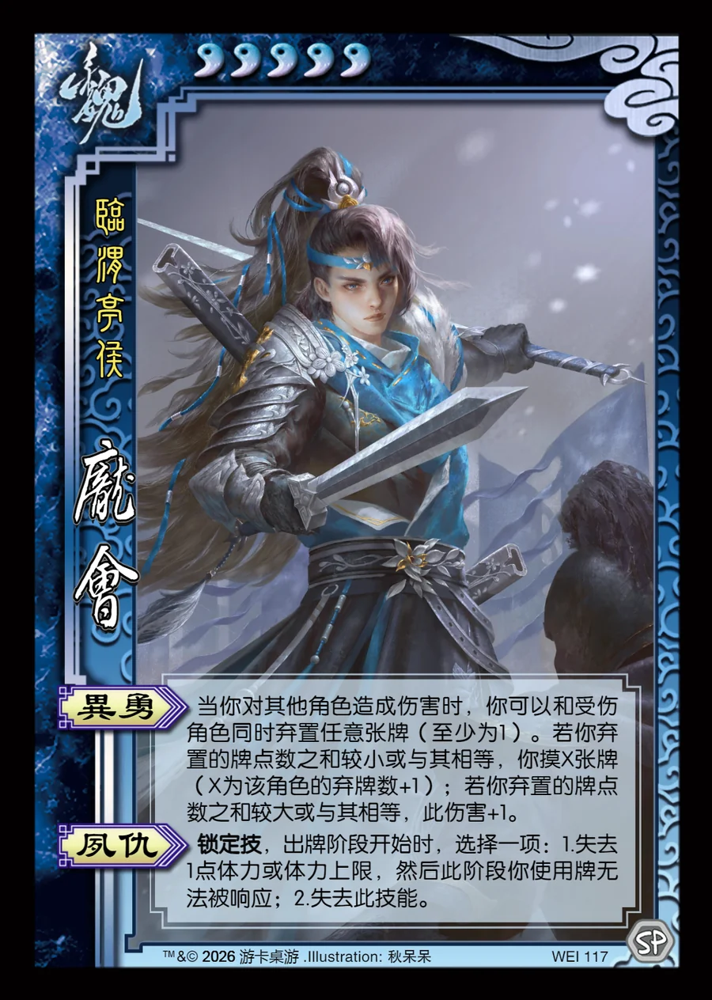

点击卡面查看大图
魏
庞会
♥5临渭亭侯
异勇
当你对其他角色造成伤害时，你可以和受伤角色同时弃置任意张牌（至少为1）。若你弃置的牌点数之和较小或与其相等，你摸X张牌（X为该角色的弃牌数+1）；若你弃置的牌点数之和较大或与其相等，此伤害+1。
夙仇锁定技
锁定技，出牌阶段开始时，选择一项：1.失去1点体力或体力上限，然后此阶段你使用牌无法被响应；2.失去此技能。

点击卡面查看大图
临渭亭侯
当你对其他角色造成伤害时，你可以和受伤角色同时弃置任意张牌（至少为1）。若你弃置的牌点数之和较小或与其相等，你摸X张牌（X为该角色的弃牌数+1）；若你弃置的牌点数之和较大或与其相等，此伤害+1。
锁定技，出牌阶段开始时，选择一项：1.失去1点体力或体力上限，然后此阶段你使用牌无法被响应；2.失去此技能。